Data Understanding#
1. Pendahuluan#
Dalam proses data mining, Data Understanding merupakan tahap yang sangat krusial karena menjadi fondasi sebelum dilakukan pembersihan data (Data Preparation) dan pemodelan (Modeling). Tahap ini bertujuan untuk memahami karakteristik data secara menyeluruh, baik dari sisi struktur, tipe data, kualitas data, maupun pola distribusinya. Tanpa pemahaman data yang baik, model yang dibangun berisiko menghasilkan kesimpulan yang bias atau tidak valid.
2. Tujuan Data Understanding#
Tujuan utama dari tahap ini adalah:
Memastikan dataset dapat dibaca dengan benar.
Memahami struktur dan tipe data.
Mengidentifikasi potensi masalah seperti missing value dan duplikasi.
Menganalisis distribusi dan pola awal melalui statistik deskriptif.
Melakukan visualisasi untuk memahami hubungan antar fitur.
Menghitung dan mengukur kedekatan data (Distance Matrix) dengan perhitungan rumus matematika yang mendalam beserta implementasi manualnya.
3. Studi Kasus 1: Iris Flower Dataset#
Sumber dan Pengumpulan Data#
Dataset yang digunakan dalam penelitian ini adalah Iris Flower Dataset. Dataset ini berisi 150 observasi bunga Iris yang terdiri dari tiga spesies (Iris-setosa, Iris-versicolor, Iris-virginica). Masing-masing spesies memiliki 50 data sehingga dataset bersifat seimbang (balanced dataset).
Tipe data fitur-fitur pada Iris adalah murni Numerik (sepal_length, sepal_width, petal_length, petal_width).
Persiapan Google Colab#
Berikut adalah kode lengkap untuk melakukan eksplorasi data Iris secara menyeluruh di Google Colab:
!pip install pandas seaborn matplotlib numpy
import pandas as pd
import seaborn as sns
import matplotlib.pyplot as plt
import numpy as np
from google.colab import files
print("Silakan pilih file CSV kamu:")
uploaded = files.upload()
file_path = list(uploaded.keys())[0]
df = pd.read_csv(file_path)
print("\n=== STRUKTUR DATA ===")
display(df.head())
print("\n=== STATISTIK DESKRIPTIF ===")
display(df.describe())
print("\n=== ANALISIS KUALITAS DATA ===")
print(f"Data Duplikat: {df.duplicated().sum()}")
print("Missing Values:")
print(df.isnull().sum())
plt.figure(figsize=(10, 6))
sns.scatterplot(data=df, x=df.columns[0], y=df.columns[1], hue=df.columns[-1])
plt.title('Scatter Plot Hubungan Variabel')
plt.show()
df.hist(figsize=(10, 8))
plt.show()
correlation_matrix = df.corr(numeric_only=True)
print(correlation_matrix)
1. Struktur Data (df.head())
Dataset Iris terdiri dari 150 observasi dengan 5 atribut berikut:
sepal_length (Numerik): Mengukur panjang struktur daun kelopak terluar yang membungkus kuncup bunga (sepal) dalam satuan centimeter (cm).
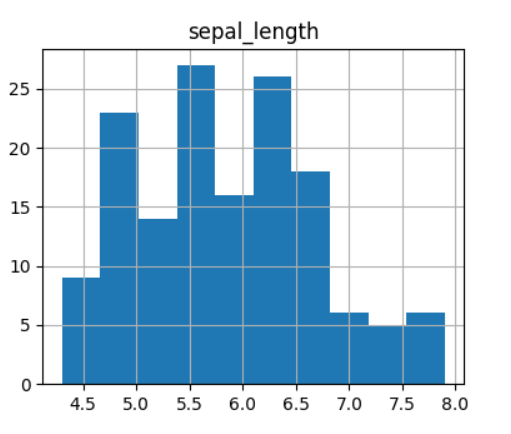
sepal_width (Numerik): Mengukur lebar bagian kelopak ekuatorial. Bersama panjangannya, proporsi kelopak ini berfungsi menempatkan serangga penyerbuk.
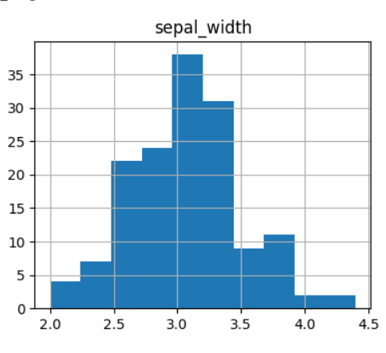
petal_length (Numerik): Mengukur panjang daun mahkota (petal) berwarna di tengah bunga dalam satuan centimeter (cm).
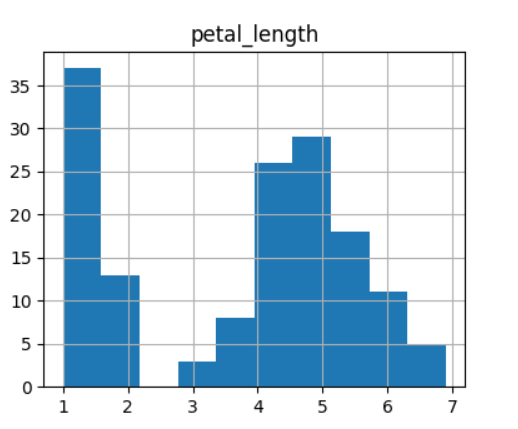
petal_width (Numerik): Mengukur lebar bentangan mahkota petal. Gabungan petal memunculkan corak identitas spesies botani paling utama.
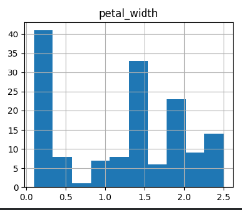
species (Kategorikal): Target klasifikasi berupa kategori jenis bunga Iris (Iris-setosa, Iris-versicolor, Iris-virginica).
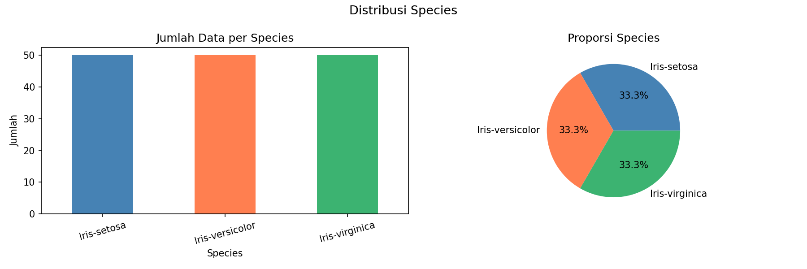
Output df.head():
index |
sepal_length |
sepal_width |
petal_length |
petal_width |
species |
|---|---|---|---|---|---|
0 |
5.1 |
3.5 |
1.4 |
0.2 |
Iris-setosa |
1 |
4.9 |
3.0 |
1.4 |
0.2 |
Iris-setosa |
2 |
4.7 |
3.2 |
1.3 |
0.2 |
Iris-setosa |
3 |
4.6 |
3.1 |
1.5 |
0.2 |
Iris-setosa |
4 |
5.0 |
3.6 |
1.4 |
0.2 |
Iris-setosa |
2. Statistik Deskriptif (df.describe())
Output df.describe():
sepal_length |
sepal_width |
petal_length |
petal_width |
|
|---|---|---|---|---|
count |
150.0 |
150.0 |
150.0 |
150.0 |
mean |
5.843333 |
3.054000 |
3.758667 |
1.198667 |
std |
0.828066 |
0.433594 |
1.764420 |
0.763161 |
min |
4.300000 |
2.000000 |
1.000000 |
0.100000 |
25% |
5.100000 |
2.800000 |
1.600000 |
0.300000 |
50% |
5.800000 |
3.000000 |
4.350000 |
1.300000 |
75% |
6.400000 |
3.300000 |
5.100000 |
1.800000 |
max |
7.900000 |
4.400000 |
6.900000 |
2.500000 |
Tidak ada nilai negatif atau anomali ekstrem. Dataset dalam kondisi normal secara statistik.
3. Analisis Kualitas Data (isnull().sum() & duplicated().sum())
Output pengecekan kualitas:
=== ANALISIS KUALITAS DATA ===
Data Duplikat: 3
Atribut Jumlah Missing Value
sepal_length 0
sepal_width 0
petal_length 0
petal_width 0
species 0
Seluruh kolom memiliki 0 missing value. Terdapat 3 baris duplikat yang perlu ditangani pada tahap Data Preparation.
4. Matriks Korelasi Pearson (df.corr())
Output matriks korelasi:
sepal_length |
sepal_width |
petal_length |
petal_width |
|
|---|---|---|---|---|
sepal_length |
1.000000 |
-0.109369 |
0.871754 |
0.817954 |
sepal_width |
-0.109369 |
1.000000 |
-0.420516 |
-0.356544 |
petal_length |
0.871754 |
-0.420516 |
1.000000 |
0.962757 |
petal_width |
0.817954 |
-0.356544 |
0.962757 |
1.000000 |
petal_length ↔ petal_width memiliki korelasi 0.9628 (sangat kuat positif).
5. Scatter Plot (sns.scatterplot)
Plot menampilkan sebaran titik data petal_length vs petal_width diwarnai per species. Iris-setosa terpisah jelas dari dua spesies lainnya.
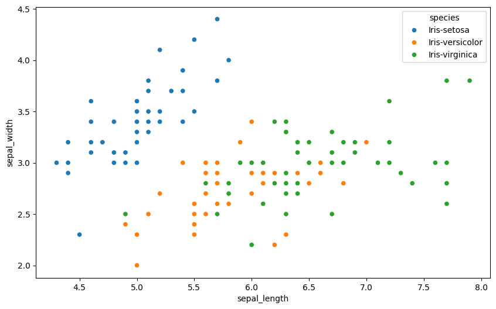
Implementasi Orange Data Mining Pada Dataset Iris#
Orange Data Mining adalah piranti visual programming berbasis Graphical User Interface (Drag-and-Drop) untuk membuktikan komputasi jarak antar data Iris secara visual tanpa perlu menulis kode.
Penarikan Data dari PostgreSQL / MySQL ke Orange#
Dataset Iris tidak hanya dapat diimpor melalui file CSV, tetapi juga bisa diintegrasikan langsung dari sistem manajemen basis data.
1. Tambahkan Widget SQL Table
Buka Orange, tambahkan widget SQL Table ke kanvas
Klik dua kali untuk membuka konfigurasi
2. Konfigurasi Koneksi PostgreSQL
Host:
localhostPort:
5432Database:
iris_flowerUser:
postgresPassword: (sesuai konfigurasi Laragon)
Klik Connect => pilih tabel
iris-flower
3. Konfigurasi Koneksi MySQL
Host:
localhostPort:
3306Database:
iris_dbUser:
rootPassword: (kosong jika default XAMPP)
Klik Connect => pilih tabel
iris-flower
4. Menghubungkan ke Widget Analisis Setelah SQL Table berhasil terkoneksi, hubungkan ke:
Column Statistics - melihat mean, median, mode tiap kolom
Distributions - distribusi frekuensi fitur
Scatter Plot - visualisasi sebaran antar fitur
Workflow Orange menjadi:
SQL Table => Column Statistics
SQL Table => Distributions
SQL Table => Scatter Plot
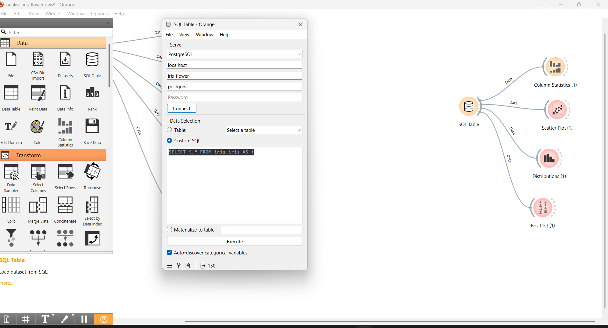
Alur Logika Panel Kabel Sistem Database Import Widget Logis Orange:
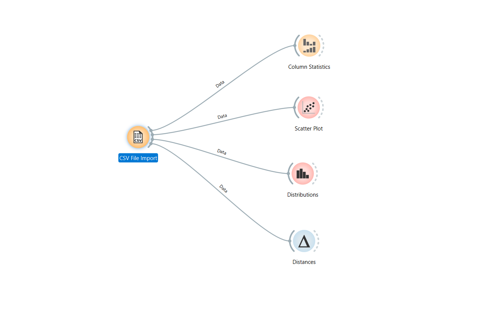
Pemuatan Input Pembaca File Database RDBMS Connection:
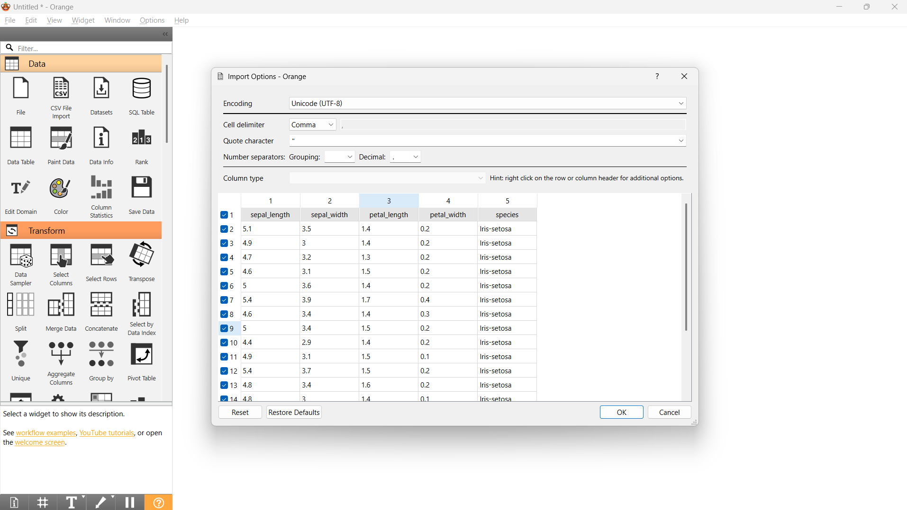
Statistik Evaluasi Kolom Cek Data:
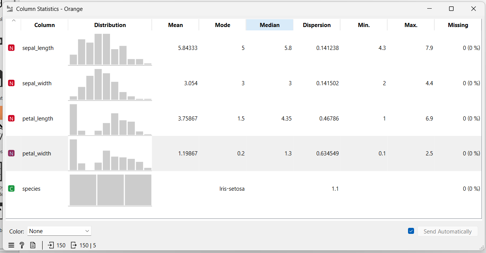
Panel Distribusi Frekuensi Data Histografis:
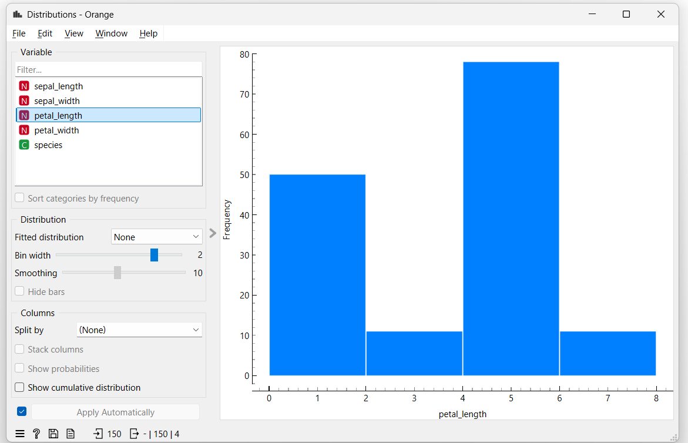
Klasterisasi Penyebaran Titik Interaksi Scatter Plot Iris:
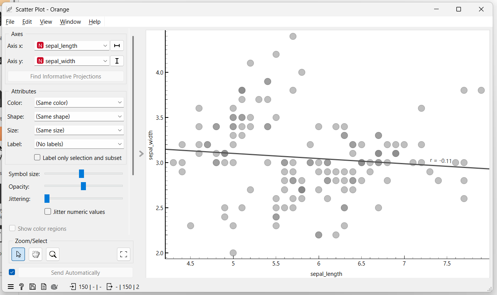
4. Studi Kasus 2: Data Adult Income#
Apa itu Adult Income Dataset?#
Adult Income Dataset (juga dikenal sebagai Census Income Dataset) adalah dataset publik yang bersumber dari data sensus populasi Amerika Serikat tahun 1994 yang dikumpulkan oleh Badan Sensus AS (U.S. Census Bureau). Dataset ini pertama kali dipublikasikan oleh Ronny Kohavi dan Barry Becker dan tersedia di UCI Machine Learning Repository. Dataset dapat diakses di Adult Income Dataset - Kaggle.
Dataset ini berisi 48.842 rekaman data individu dewasa dengan 15 atribut yang mencakup informasi demografis, pendidikan, pekerjaan, dan status sosial-ekonomi. Tujuan utama dataset ini adalah untuk memprediksi apakah pendapatan tahunan seseorang melebihi $50.000 USD berdasarkan atribut-atribut tersebut.
Karakteristik utama dataset:
Total Fitur: 15 kolom (campuran numerik dan kategorikal)
Tipe Data: Heterogen - memuat kolom numerik, ordinal, nominal, dan biner
Target Prediksi: Kolom
incomedengan dua kelas:<=50Katau>50KKegunaan: Klasifikasi biner untuk studi demografi sosial-ekonomi
Dataset ini sangat relevan untuk mempelajari teknik Data Understanding pada data campuran karena kombinasi tipe datanya yang kompleks memerlukan pendekatan pengukuran jarak yang berbeda dari dataset numerik murni seperti Iris.
Kita menggunakan dataset.csv yang memuat kolom campur (mixed data types). Mari kita ambil 2 baris pertama (Row 0 dan Row 1) dari dataset untuk mendemonstrasikan perhitungan jarak secara manual.
Persiapan dan Pemuatan Dataset (Google Colab Python)#
Sama halnya dengan Iris, langkah awal untuk dataset campuran adalah memuat file ke dalam format dataframe dan melakukan eksplorasi awal.
%matplotlib inline
import pandas as pd
import matplotlib.pyplot as plt
import seaborn as sns
import numpy as np
# Membaca Dataset Campuran
df_adult = pd.read_csv("dataset.csv", sep=";")
display(df_adult.head())
1. Struktur Awal Data (Head) Lima baris pertama menunjukkan campuran kolom numerik (age, fnlwgt, hours-per-week) dan kategorikal (workclass, education, income).
index |
age |
workclass |
fnlwgt |
education |
educational-num |
marital-status |
occupation |
relationship |
race |
gender |
capital-gain |
capital-loss |
hours-per-week |
native-country |
income |
|---|---|---|---|---|---|---|---|---|---|---|---|---|---|---|---|
0 |
25 |
Private |
226802 |
11th |
7 |
Never-married |
Machine-op-inspct |
Own-child |
Black |
Male |
0 |
0 |
40 |
United-States |
<=50K |
1 |
38 |
Private |
89814 |
HS-grad |
9 |
Married-civ-spouse |
Farming-fishing |
Husband |
White |
Male |
0 |
0 |
50 |
United-States |
<=50K |
2 |
28 |
Local-gov |
336951 |
Assoc-acdm |
12 |
Married-civ-spouse |
Protective-serv |
Husband |
White |
Male |
0 |
0 |
40 |
United-States |
>50K |
3 |
44 |
Private |
160323 |
Some-college |
10 |
Married-civ-spouse |
Machine-op-inspct |
Husband |
Black |
Male |
7688 |
0 |
40 |
United-States |
>50K |
4 |
18 |
? |
103497 |
Some-college |
10 |
Never-married |
? |
Own-child |
White |
Female |
0 |
0 |
30 |
United-States |
<=50K |
2. Statistik Deskriptif
display(df_adult.describe())
age |
fnlwgt |
educational-num |
capital-gain |
capital-loss |
hours-per-week |
|
|---|---|---|---|---|---|---|
count |
500.0 |
500.0 |
500.0 |
500.0 |
500.0 |
500.0 |
mean |
37.338 |
188303.492 |
10.008 |
1470.008 |
70.916 |
40.272 |
std |
13.653 |
101198.741 |
2.543 |
9298.308 |
354.581 |
11.981 |
min |
17.0 |
20308.0 |
2.0 |
0.0 |
0.0 |
5.0 |
25% |
26.0 |
110718.25 |
9.0 |
0.0 |
0.0 |
38.75 |
50% |
35.0 |
177832.0 |
10.0 |
0.0 |
0.0 |
40.0 |
75% |
46.0 |
238286.5 |
12.0 |
0.0 |
0.0 |
45.0 |
max |
80.0 |
599057.0 |
16.0 |
99999.0 |
2415.0 |
99.0 |
3. Analisis Kualitas Data
print(f"Data Duplikat: {df_adult.duplicated().sum()}")
print("Missing Values:")
print(df_adult.isnull().sum())
Data Duplikat: 0
Missing Values:
age 0
workclass 0
fnlwgt 0
education 0
educational-num 0
marital-status 0
occupation 0
relationship 0
race 0
gender 0
capital-gain 0
capital-loss 0
hours-per-week 0
native-country 0
income 0
dtype: int64
Dataset mengandung nilai ? pada kolom workclass dan occupation sebagai penanda missing value kategorikal (bukan null).
Penjelasan Tipe Data Tiap Fitur#
Untuk bisa menganalisis profil Adult Income ini, kita wajib membongkar arti masing-masing kolom pengamatan tanpa ada satupun yang terlewat:
age(Numerik): Usia individu saat survei dilakukan (contoh: 25, 38).workclass(Kategorikal): Sektor pekerjaan individu. Nilainya tidak berjenjang (contoh: Private, Local-gov, Self-emp-inc).fnlwgt(Numerik): Final Weight - bobot statistik dari Badan Sensus yang menunjukkan perkiraan jumlah orang dengan profil serupa di populasi nyata.education(Kategorikal): Tingkat pendidikan terakhir yang diselesaikan (contoh: 11th, HS-grad, Some-college, Bachelors). Berjenjang dan punya urutan.educational-num(Numerik): Versi angka dari kolomeducation(contoh: HS-grad = 9, Some-college = 10, Bachelors = 13).marital-status(Kategorikal): Status pernikahan individu (contoh: Never-married, Married-civ-spouse, Divorced).occupation(Kategorikal): Jenis pekerjaan yang dijalani (contoh: Machine-op-inspct, Farming-fishing, Protective-serv).relationship(Kategorikal): Peran individu dalam keluarga (contoh: Own-child, Husband, Wife, Unmarried).race(Kategorikal): Latar belakang ras individu (contoh: White, Black, Asian-Pac-Islander, Other).gender(Biner): Jenis kelamin individu - hanya dua nilai: Male atau Female.capital-gain(Numerik): Keuntungan finansial dari investasi atau aset. Sering bernilai 0 karena kebanyakan individu tidak punya pendapatan investasi.capital-loss(Numerik): Kerugian finansial dari penurunan nilai aset atau investasi.hours-per-week(Numerik): Jumlah jam kerja per minggu.native-country(Kategorikal): Negara asal individu (contoh: United-States, Mexico, Philippines).income(Biner): Target prediksi - kategori penghasilan tahunan:<=50K(tidak lebih dari 50 Ribu USD) atau>50K(lebih dari 50 Ribu USD).
Berdasarkan data di atas, kita ambil cuplikan ringkas untuk perhitungan. Titik fokus perhitungan:
Baris 1 (Line 9 dalam dataset.csv)
Age= 63 (Numerik)Hours-per-week= 32 (Numerik)Workclass= Self-emp-not-inc (Kategorikal)Education= Prof-school (Kategori Ordinal, Edu-num = 15)Gender= Male (Biner)Income= >50K (Biner)
Baris 2 (Line 10 dalam dataset.csv)
Age= 24 (Numerik)Hours-per-week= 40 (Numerik)Workclass= Private (Kategorikal)Education= Some-college (Kategori Ordinal, Edu-num = 10)Gender= Female (Biner)Income= <=50K (Biner)
Konversi Tipe Data Sebelum Perhitungan#
Sebelum menghitung jarak, semua tipe data harus dikonversi ke bentuk numerik terlebih dahulu:
Fitur |
Tipe |
Baris 1 (Raw) |
Baris 2 (Raw) |
Konversi |
Baris 1 |
Baris 2 |
|---|---|---|---|---|---|---|
|
Numerik |
63 |
24 |
Langsung pakai |
63 |
24 |
|
Numerik |
32 |
40 |
Langsung pakai |
32 |
40 |
|
Kategorikal |
Self-emp |
Private |
Label Encoding |
0 |
1 |
|
Ordinal |
15 |
10 |
Langsung pakai angkanya |
15 |
10 |
|
Biner |
Male |
Female |
Male=1, Female=0 |
1 |
0 |
|
Biner |
>50K |
<=50K |
>50K=1, <=50K=0 |
1 |
0 |
Vektor setelah konversi:
Vektor A (Baris 1):
[63, 32, 0, 15, 1, 1]Vektor B (Baris 2):
[24, 40, 1, 10, 0, 0]
Perhitungan Manual Jarak Campuran (Adult Income)#
Dataset campuran diproses dengan metode mengonversi struktur Ordinal menjadi Numerik, menghitung jarak tersebut bersama atribut numerik murni melalui Euclidean, menghitung Kategorikal dengan rumus standard probabilitas (P - M)/P, dan diakhiri dengan menjumlahkan keduanya secara ekuivalen.
Berikut adalah data sampel untuk pengujian (Baris 1 dan Baris 2):
Fitur |
Baris 1 |
Baris 2 |
Tipe Asli |
Metode Jarak |
|---|---|---|---|---|
|
15 |
10 |
Ordinal |
Konversi Skala [0,1] => Euclidean |
|
63 |
24 |
Numerik |
Nilai Raw => Euclidean |
|
32 |
40 |
Numerik |
Nilai Raw => Euclidean |
|
Male |
Female |
Biner |
Konversi (1, 0) => Euclidean |
|
>50K |
<=50K |
Biner |
Konversi (1, 0) => Euclidean |
|
Self-emp |
Private |
Kategorikal |
Simple Matching |
|
Married |
Never-mar |
Kategorikal |
Simple Matching |
|
Specialty |
Other-serv |
Kategorikal |
Simple Matching |
|
Husband |
Unmarried |
Kategorikal |
Simple Matching |
|
White |
White |
Kategorikal |
Simple Matching |
|
US |
US |
Kategorikal |
Simple Matching |
Langkah 1: Konversi Ordinal & Biner ke Numerik#
Sebelum masuk ke rumus sqrt (Euclidean), data non-numerik yang punya tingkatan atau biner harus diubah:
A. Skala Ordinal (educational-num)
Rumus Konversi Ordinal#
Baris 1 (x=15): \(\frac{15 - 2}{16 - 2} = \mathbf{0.9286}\)
Baris 2 (x=10): \(\frac{10 - 2}{16 - 2} = \mathbf{0.5714}\)
B. Skala Biner (gender & income)
Untuk variabel biner, kita harus menentukan sifat kedekatannya apakah Simetris atau Asimetris:
gender(Simetris): Karena kedua kategori (Male/Female) dianggap memiliki bobot yang setara untuk diukur jaraknya.income(Asimetris): Karena biasanya kita lebih fokus pada kondisi “kritis” atau “spesifik” (seperti pendapatan >50K).
Berikut adalah rumus yang digunakan untuk menghitung jarak biner:
Jarak Biner Simetris (Symmetric Binary) $\(\huge d(i, j) = \frac{r + s}{q + r + s + t}\)$
Jarak Biner Tidak Simetris (Asymmetric Binary) $\(\huge d(i, j) = \frac{r + s}{q + r + s}\)$
Identifikasi Parameter:
q: Jumlah atribut di mana kedua baris bernilai 1.
r: Jumlah atribut di mana Baris \(i=1\) dan Baris \(j=0\).
s: Jumlah atribut di mana Baris \(i=0\) dan Baris \(j=1\).
t: Jumlah atribut di mana kedua baris bernilai 0.
Mapping Data:
Gender: Baris 1 (Male) = 1, Baris 2 (Female) = 0
Income: Baris 1 (>50K) = 1, Baris 2 (<=50K) = 0
Langkah 2: Jarak Numerik & Ordinal (Euclidean)#
Atribut numerik murni dan ordinal (yang sudah dikonversi) dihitung selisihnya, dikuadratkan, lalu diakar (sqrt):
Fitur |
Nilai Baris 1 |
Nilai Baris 2 |
Selisih (\(A - B\)) |
Kuadrat \((\dots)^2\) |
|---|---|---|---|---|
Age (Num) |
63 |
24 |
\(39\) |
\(\mathbf{1521}\) |
Hours (Num) |
32 |
40 |
\(-8\) |
\(\mathbf{64}\) |
Edu-num (Ord) |
0.9286 |
0.5714 |
\(0.3572\) |
\(\mathbf{0.1276}\) |
Sigma Kuadrat (\(\Sigma\)): \(1521 + 64 + 0.1276 = \mathbf{1585.1276}\)
Jarak Euclidean (\(D_{num\_ord}\)): \(\sqrt{1585.1276} = \mathbf{39.8137}\)
Langkah 3: Jarak Biner (Symmetric & Asymmetric)#
Kita membedah kemunculan nilai pada variabel gender dan income. Karena terdapat atribut biner asimetris (income), maka secara umum sekumpulan variabel biner ini dapat diproses menggunakan pendekatan asimetris, namun kita akan hitung keduanya untuk melihat perbandingannya:
Fitur Biner |
Baris 1 |
Baris 2 |
Pasangan (i, j) |
Kategori |
|---|---|---|---|---|
|
1 |
0 |
(1, 0) |
r |
|
1 |
0 |
(1, 0) |
r |
Identifikasi Parameter Akhir:
q (1,1): 0
r (1,0): 2
s (0,1): 0
t (0,0): 0
Kalkulasi Jarak:
Jarak Biner Simetris (\(D_{bin\_sym}\)): \(\frac{2 + 0}{0 + 2 + 0 + 0} = \mathbf{1.0}\)
Jarak Biner Asimetris (\(D_{bin\_asym}\)): \(\frac{2+0}{0+2+0} = \mathbf{1.0}\)
(Dalam studi kasus Row 1 vs Row 2 ini, kedua hasil bernilai 1.0 karena tidak adanya kecocokan nilai 0-0 ataupun 1-1 pada kolom biner).
Langkah 4: Jarak Kategorikal (Simple Matching)#
Secara kolom demi kolom, kita mengeksplor status persamaannya:
Fitur Kategorikal |
Baris 1 |
Baris 2 |
Perbandingan |
Status Kecocokan |
|---|---|---|---|---|
|
Self-emp |
Private |
Self-emp != Private |
Beda |
|
Married |
Never-mar |
Married != Never-mar |
Beda |
|
Specialty |
Other-serv |
Specialty != Other-serv |
Beda |
|
Husband |
Unmarried |
Husband != Unmarried |
Beda |
|
White |
White |
White == White |
Sama |
|
US |
US |
US == US |
Sama |
Rumus Jarak Kategorikal (Simple Matching)#
Identifikasi untuk rumus di atas:
Banyak Kolom Kategorikal (P): 6 atribut
Data yang Sama (M): 2 (race, native-country)
Jarak Kategorikal (\(D_{cat}\)): \(\frac{6 - 2}{6} = \frac{4}{6} = \mathbf{0.6667}\)
Langkah 5: Kalkulasi Jarak Total#
Setelah variabel dipisah menjadi numerik, ordinal, biner, dan murni heterogen kategorikal, nilai integrasinya digabung kedalam satu total penjumlahan utuh:
Rumus Total Jarak Heterogen#
$\(D_{total} = 39.8137 + 1.0 + 0.6667 = \mathbf{41.4804}\)$
Implementasi Orange Data Mining (Adult Income)#
Workflow Orange untuk membuktikan perhitungan jarak pada dataset campuran:
File => Preprocess => Distances => Distance Matrix
Langkah:
File → load
dataset.csv, separator;Preprocess → tambahkan dua transformasi:
Impute Missing Values → Menggunakan model statistik untuk mengisi nilai
?berdasarkan tetangga terdekat.Continuize Discrete Variables → Mengubah kategori menjadi numerik.
Normalize Features → Menyamakan skala fitur ke rentang [0, 1].
Distances → Hitung jarak antar baris (Euclidean/Manhattan).
Distance Matrix → Tampilkan tabel jarak antar data.
Alur Logika Panel Kabel Sistem Database Import Widget Logis Orange:
Pemuatan Input Pembaca File Database RDBMS Connection:
Statistik Evaluasi Kolom Cek Data:
Panel Distribusi Frekuensi Data Histografis:
Klasterisasi Penyebaran Titik Interaksi Scatter Plot Adult Income: